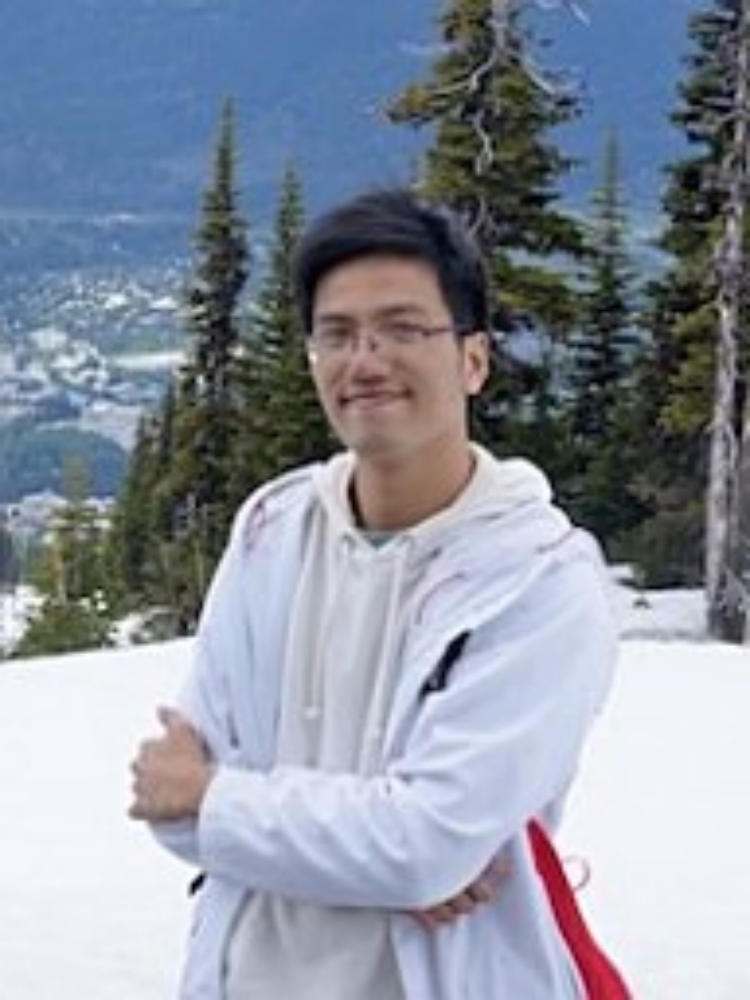
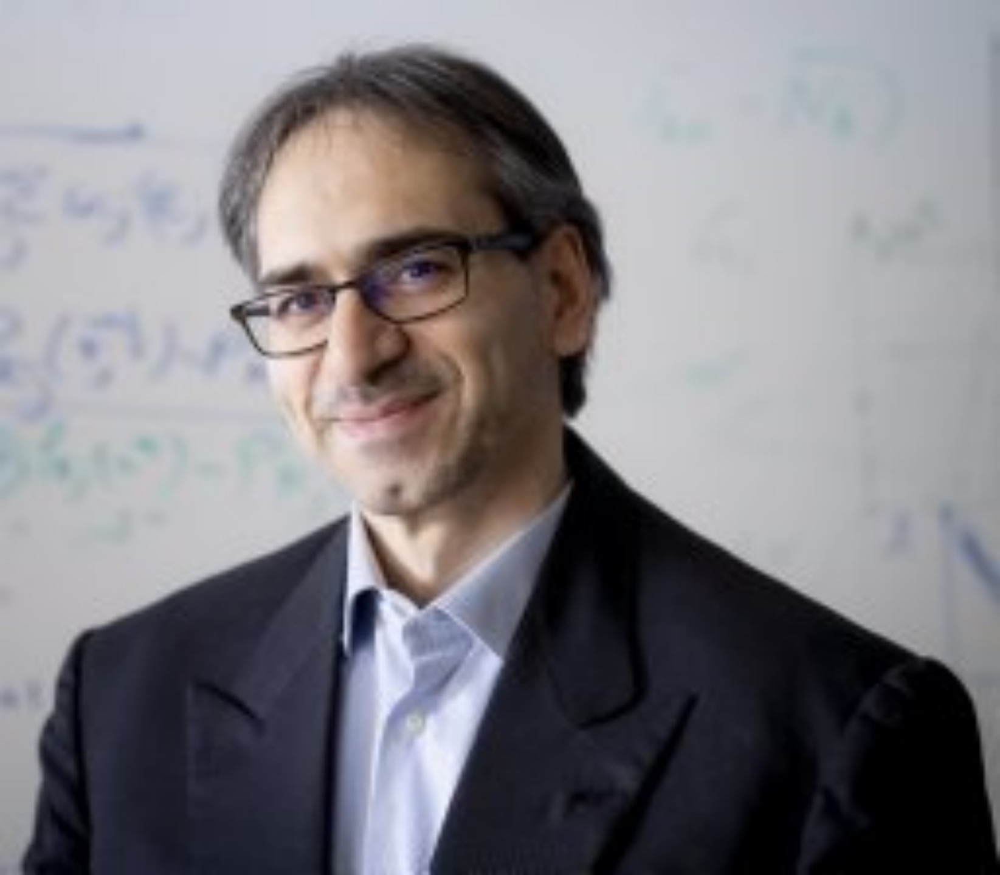

|
ZJU-CSE Summer School 2021
Introduction to the summer school
The summer school covers several recent advances in the topic of distributed control, optimization and learning. The main object of the course is to present in an accessible way (lectures, tutorial/seminars) to graduate students some advanced control and optimization methods for large-scale systems that arise in modern control engineering and data science. The content of the course covers basics for convex optimization, first-order optimization methods (e.g., gradient method, stochastic method, accelerated gradient methods and primal-dual methods), decomposition and splitting methods (e.g., dual decomposition, monotone operators and operator splitting, ADMM), as well as recent developed parallel and distributed algorithms. Besides, several tutorial/seminars from leading research scholars will be provided to introduce some frontier advanced topics in distributed control, optimization and learning. To enhance the learning outcome of students, new online learning models, such as SPOC, will be likely employed to promote self-learning and diversity of learning processes, along with a bunch of concrete examples including smart grid, sensor networks and machine learning for the sake of enriching the content of the course. After completing this course, the students are expected to be able to apply the control and optimization techniques learned from this course to large-scale cyber-physical systems as well as other related research areas.
Course Content
Lectures
Tutorial/Seminars(tentative)
|
 |
Title(T/S II): Decentralized learning in the nonconvex world: Recent results
Speaker: Prof Hoi To Wai, Chinese University of Hong Kong
Abstract: Decentralized learning has become a critical enabler of the massively connected world that many people envision. In this talk, we discuss four key elements of scalable decentralized optimization and control: optimization problems, data, communication, and computation. We describe how these elements should work together in an effective and coherent manner. We review recent techniques developed for optimizing nonconvex models (i.e., problem classes) that process batch/streaming data (data types) across networks in a decentralized manner (communication and computation paradigm). We describe the intuitions and connections behind a core set of popular decentralized algorithms, emphasizing how to balance computation and communication costs. Practical issues and future research directions will also be discussed.
Speaker Homepage: https://www1.se.cuhk.edu.hk/~htwai/
|
|
|
Title(T/S III): Towards Scalable Algorithms for Distributed Optimization and Learning
Speaker: Prof. Cesar Uribe, Rice University
Abstract: Increasing amounts of data generated by modern complex systems such as the energy grid, social media platforms, sensor networks, and cloud-based services call for attention to distributed data processing, in particular, for the design of scalable algorithms that take into account storage and communication constraints and help to make coordinated decisions. In this talk, we present recently proposed distributed algorithms with optimal convergence rates for optimization problems over networks, where data is stored distributedly. We focus on scalable algorithms and show they can achieve the same rates as their centralized counterparts, with an additional cost related to the structure of the network. We provide application examples to distributed inference and learning, and computational optimal transport.
Speaker Homepage: https://cauribe.rice.edu/
|
|
 |
Title(T/S V): Bringing Statistical Thinking in Distributed Optimization. Vignettes from statistical inference over Networks (Part I, Part II)
Speaker: Prof Gesualdo Scutari, Purdue University
Abstract: TBD
Speaker Homepage: https://engineering.purdue.edu/~gscutari/
|
|
|
Title(T/S VII): Smart Sensing and Localization for Intelligent Unmanned Systems
Speaker: Prof Lihua Xie, Nanyang Technological University
Abstract: Sensing and localization are essential for IoT and intelligent unmanned systems. GPS has been widely used for positioning and navigation. However, in indoor and many outdoor environments such as urban canon, forest, tunnel, GPS may not be available or unreliable. Hence, there has been a lot of interest in developing technologies and algorithms for localization in such environments. In this talk, we shall discuss several sensing and localization systems and algorithms we have developed over the past few years including WiFi based indoor positioning and human activity recognition, UWB based localization, and vision-inertial-range sensor fusion for localization and mapping. Their applications in smart building/home, elderly care, UAV based structure inspection and AGV for logistics will be presented, and challenges and future research directions will be highlighted.
Speaker Homepage: https://www3.ntu.edu.sg/home/elhxie/index.html
|
Way of Teaching
Language: Bilingual (English + Chinese)
Course Form: Lectures (Basics) + Tutorials/Seminars (Advanced Topics)
Manner: Online (key concepts; Sketch of proofs) + Offline (Mathematical derivation)
Invited speakers
Prof Gesualdo Scutari, Purdue University
Prof Ying Sun, Pennsylvania State University
Prof Lihua Xie, Nanyang Technological University
Prof Angelia Nedich, Arizona State University
Prof Usman Khan, Tufts University
Prof Hoi To Wai, Chinese University of Hong Kong
Prof Cesar Uribe, Rice University
Prof Shichao Liu, Carleton University
Prof Wenchao Meng, Zhejiang University
Prof Chengcheng Zhao, Zhejiang University
Dr. Kun Yuan, Damo Academy
Prof Huan Li, Nankai University
Time Schedule
Week One (Aug 02 - Aug 06)
| Time | Monday (Aug 02) | Tuesday(Aug 03) | Wednesday(Aug 04) | Thursday(Aug 05) | Friday(Aug 06) |
8.30 am - 12.00 pm
(GMT+8) | Lecture I
Introduction to the course
Speaker
Jinming Xu, ZJU
（Yuquan Campus） | Lecture II
Convex Optimization
Speaker
Ying Sun, PSU
（online） | Lecture IV
Distributed Convex Optimization
Speaker
Ying Sun, PSU
（online） | Lecture V
Stochastic Optimization
Speaker
Ying Sun, PSU
（online） | Lecture VIII
Advanced Topics(Operator Splitting, ADMM)
Speaker
Jinming Xu, ZJU
（Yuquan Campus） |
12.00 pm - 2.30 pm
(GMT+8) | Lunch Break | Lunch Break | Lunch Break | Lunch Break | Lunch Break |
2.30 pm - 5.30 pm
(GMT+8) | Lab Tour
Shining Gao/Anjun Chen
(Yuquan Campus) | Research & Discussion | Research & Discussion | Lecture VI
Distributed Stochastic Optimization
Speaker
Kun Yuan, Damo Academy
(Yuquan Campus) | Lecture IX
Advanced Topics(Acceleration)
Speaker
Huan Li, NKU
（Yuquan Campus） |
|
|
Week Two (Aug 09 - Aug 13)
| Time | Monday (Aug 09) | Tuesday(Aug 10) | Wednesday(Aug 11) | Thursday(Aug 12) | Friday(Aug 13) |
8.30 am - 12.00 pm
(GMT+8) | T/S I
Prof. Usman Khan, Tufts Univ
T/S II
Prof. Hoi To Wai, CUHK | T/S III
Prof Cesar Uribe, Rice
T/S IV
Prof Angelia Nedich, ASU | T/S V
Part I/Part II
Prof Gesualdo Scutari, Purdue | T/S VI
Prof Shichao liu, Carleton
T/S VII
Prof Xie Lihua, NTU | Group Sharing & Discussion |
12.00 pm - 2.30 pm
(GMT+8) | Lunch Break | Lunch Break | Lunch Break | Lunch Break | Lunch Break |
2.30 pm - 5.30 pm
（GMT+8） | Lecture III
Distributed Control
Speaker
Prof Meng Wenchao, ZJU
（Yuquan Campus） | Research & Discussion | Lecture VII
Distributed Control
Speaker
Prof Chengcheng Zhao, ZJU
（Yuquan Campus） | Research & Discussion | |
|
|
Registration and Deadlines
Registration:
Welcome to register (free) this event via the following link
https://jinshuju.net/f/KEOdJK
Deadlines:
Pre-registration: 28 July 2021;
Notification: 30 July 2021.
Organizers and Contact
This event is organized by Jinming Xu (ZJU), Wenchao Meng (ZJU), Chengcheng Zhao (ZJU) and Ying Sun (PSU) with the advisory board member Jiming Chen (ZJU), Peng Cheng (ZJU) and Gesualdo Scutari (Purdue). For inquiries, please write to jimmyxu AT zju.edu.cn.
|